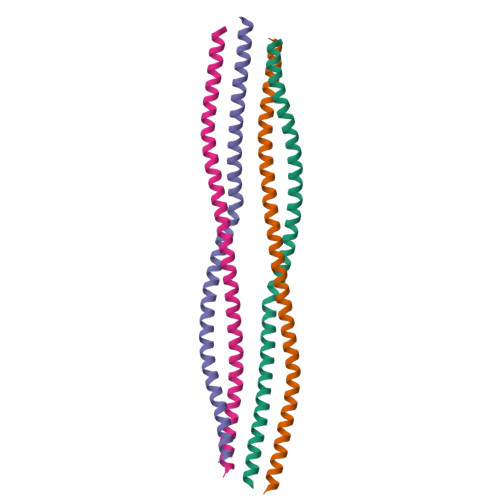

Specific intermediate filament (IF) gene mutations alter cell cytoskeleton structure and subsequent function, driving abnormal cytoskeletal remodeling prevalent in conditions like Alexander Disease (AxD) and Giant Axonal Neuropathy (GAN). In AxD, structural changes are primarily driven by missense mutations in the glial fibrillary acidic protein (GFAP) gene, which encodes an astrocytic IF protein. Ongoing clinical studies continue to identify novel variants, but information surrounding GFAP mutations remains scattered across literature and database sources. My research aims to establish a web-based resource that compiles known GFAP missense mutations, integrates diverse datasets into GFAP biology, and provides a comprehensive model of the protein. These findings will support the endeavors of future researchers looking to pinpoint structural and functional insights for specific regions of GFAP.
"Everything that human beings or living animals do is done by protein molecules. And therefore the kind of proteins that one has and therefore the ability one has is determined by the genes that one has."
- Har Gobind Khorana